Behaviour System
The Behaviour System is a tool to replace coding interactions with user interface and button presses.
Behaviour Manager
Behaviour Manager is the manager of Behaviour System, will be introduced below.
Right-click vGear > GameObject > Behaviour Manager, the prefab added contain V Gear_Behaviour Manager(Script) component, which manage the system.
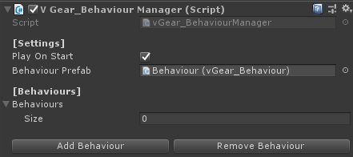
Click
Add Behaviourof the manager, a new gameobject is added in [Behaviour], and added into Hierarchy as a child ofBehaviour Manager.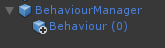
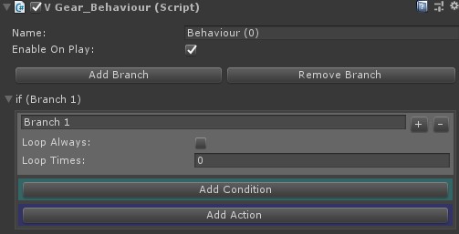
Select the
Behaviour (0)generated, clickAdd Conditionin theV Gear Behaiour (Script)component. Then clickCondition 1of theIfBranch, it will bring you to theCondition Edit Window. There are different types of condition with parameter to choose.
Place a prop gameobject from
Propsto addV Gear_Interactablecomponent into the gameobject. Attach it into theCondition 1and set the Condition type toInteractionas follow.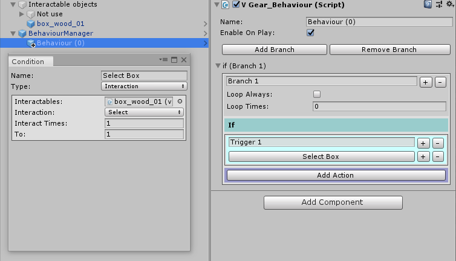
Click
Add Actionin theBehaviourcomponent,Actionwindow is brought out with different types of action.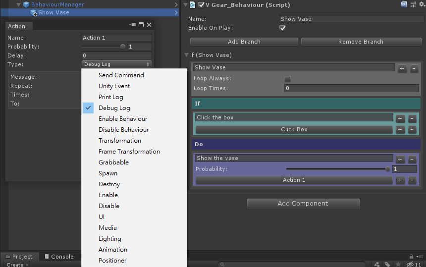
Place another prop gameobject at the top of the prop before and disable it. Attach it into the
Action 1and set the Action Type toEnableas follow.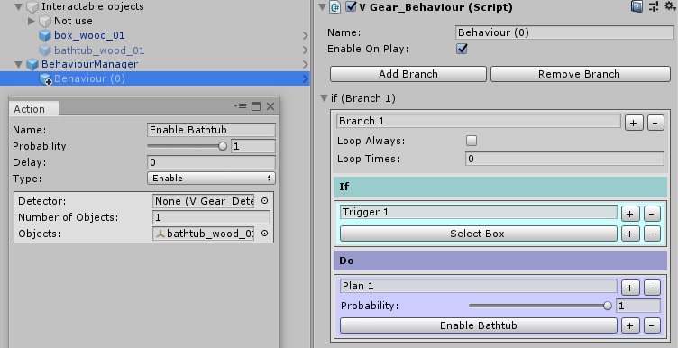
The result of this example will be as follow, when the box is selected, the bathtub appears!


Scenario
By using Behaviour Manager, we can perform scenario without coding. The following example is a simple scenario, when the box is interacted or we wait in front of the box for five seconds, a shield is found and can be rotate.
Place the models in suitable position with adding
v Gear_Interactables(Script)component to them and disable the arrow button and the shield. Add aPositionerprefab in front of the box by right-clickvGEar > GameObject > Positioner.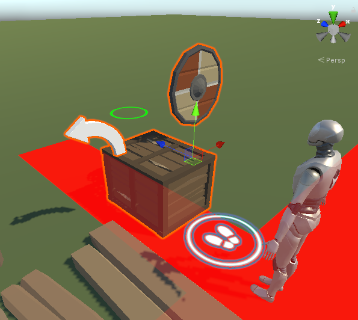
Here will be two behaviour in this scenario, one to open the box with shield and arrow button, another to rotate the shield.
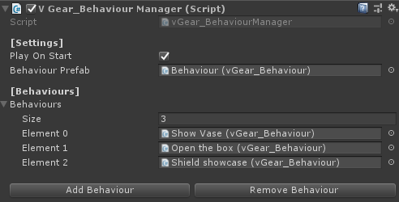
The first behaviour shows the functions in the branch. If one of the
Triggeris triggered, thePlanin the branch will be executed.For multiple
Plans, one of it will be excuted. The sum of their probability will be 100% automatically.For no
Trigger, thePlanwill be directly executed.If none of the
Triggeris triggered, the Behaviour will go to next branch.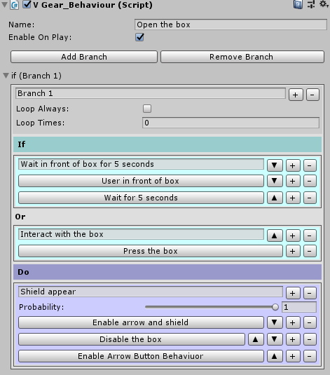
Below is the detail of the first behaviour.
It performs
logical ANDin theTriggerWait in front of box for 5 seconds, andlogical ORbetween theTriggerWait in front of box for 5 secondsand theTriggerInteract with the box.To perform
logical ANDwith two conditions in aTrigger, press the+button next to the first condition.To perform
logical ORbetweenTriggers, press the+button next to the firstTrigger.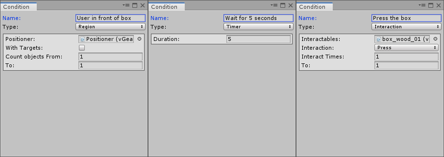
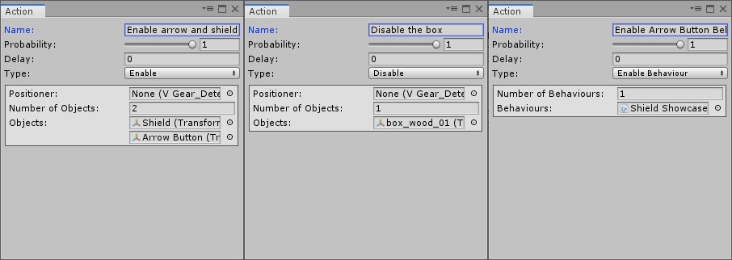
The second behaviour shows the usage of loop in the
Behaviour.Input desire value into
Loop Timesto loop the behaviour several times.Check the option
Loop Alwaysto loop the behaviour forever when it being triggered.Below is the detail of the second behaviour.
It performs loop feature when the first
Triggeris satisfied. When theTriggerPress Arrow Buttonis triggered, the PlanRotate the Shieldwill be executed.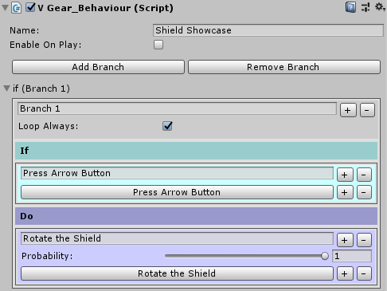
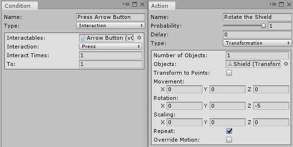